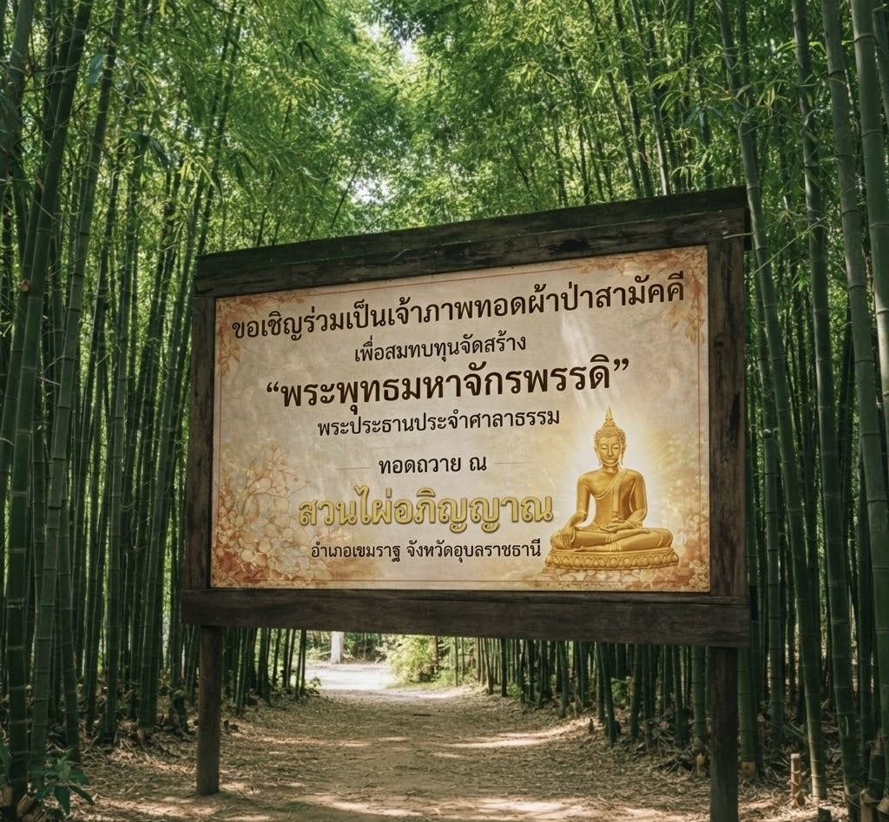
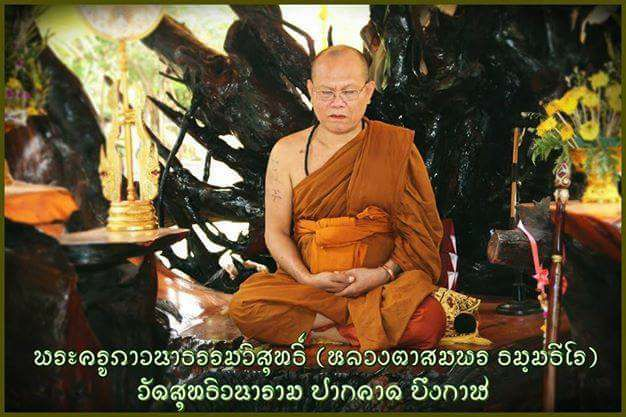
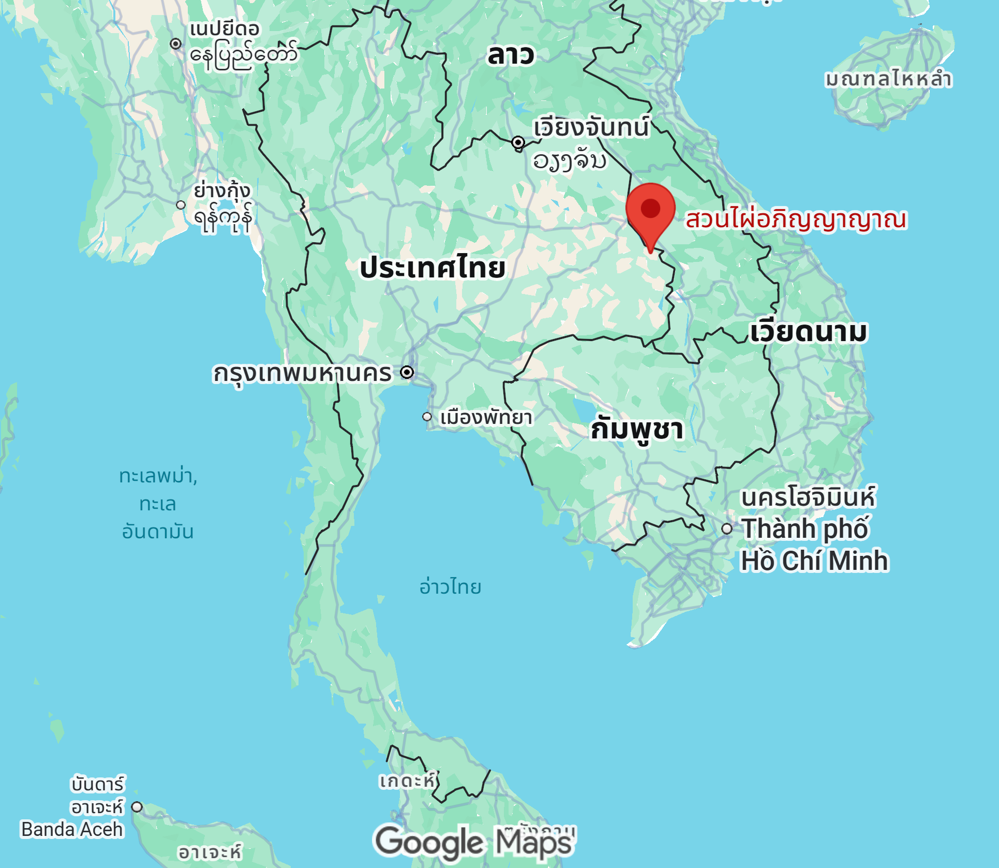
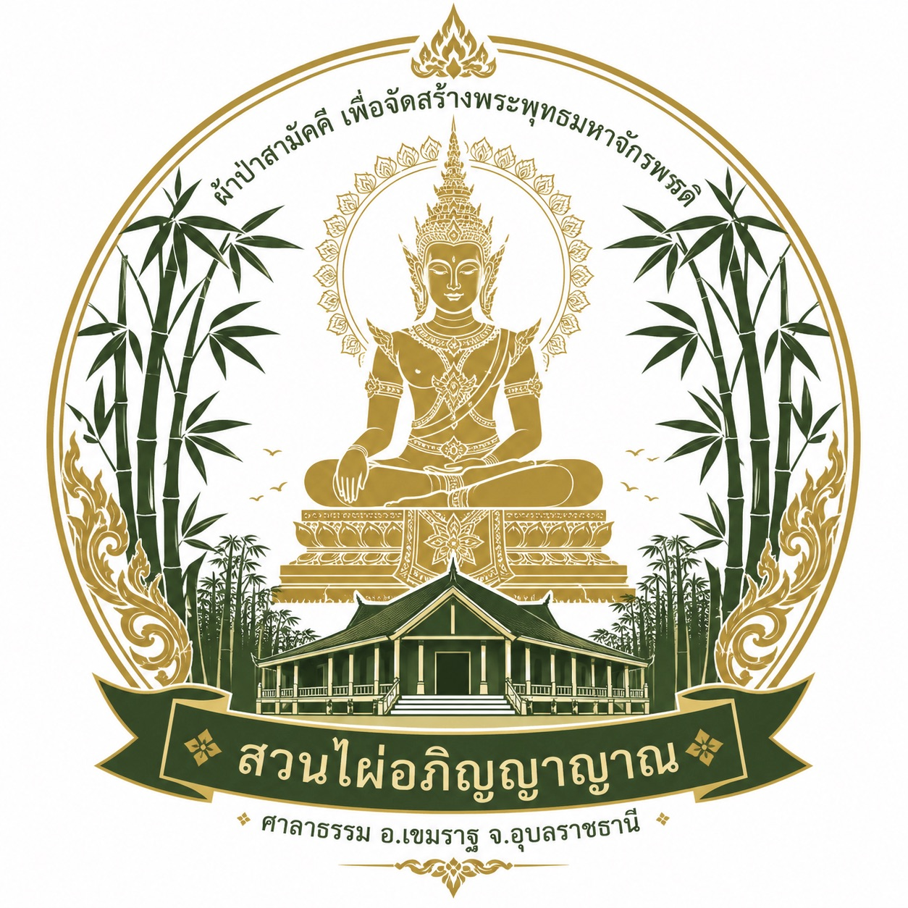
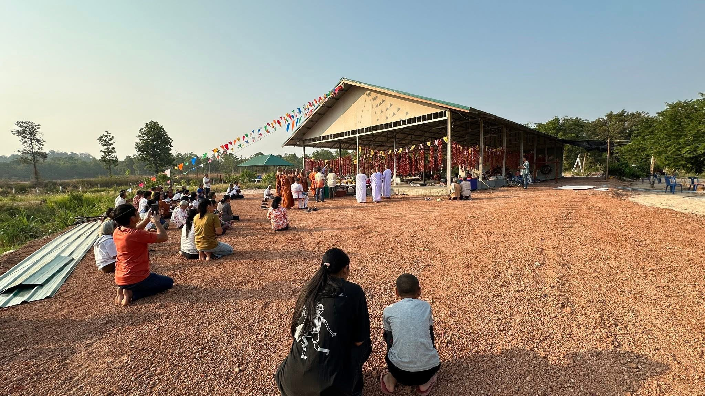
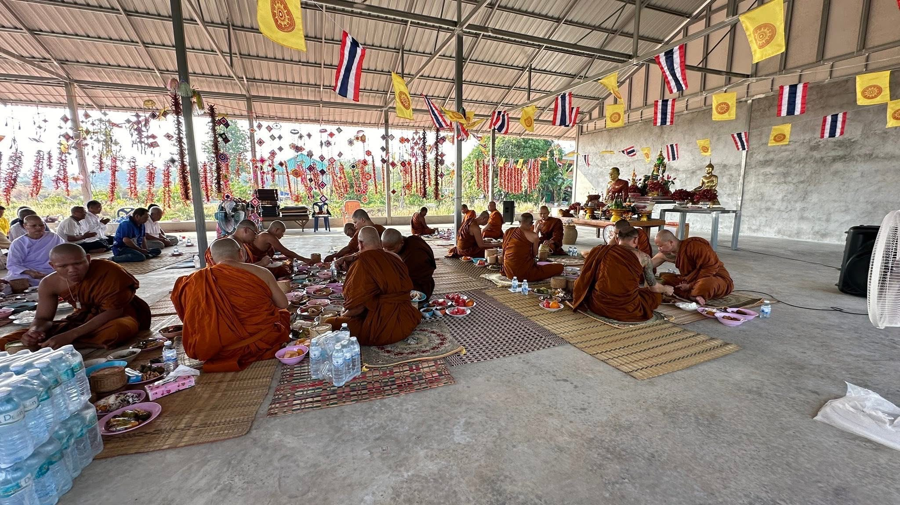
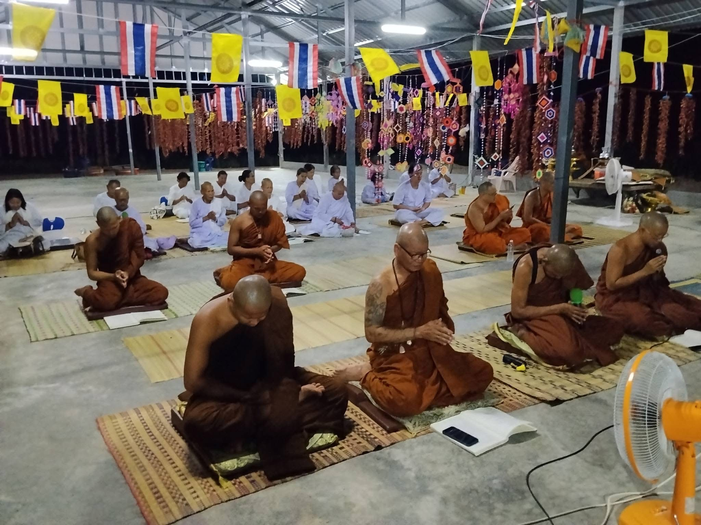
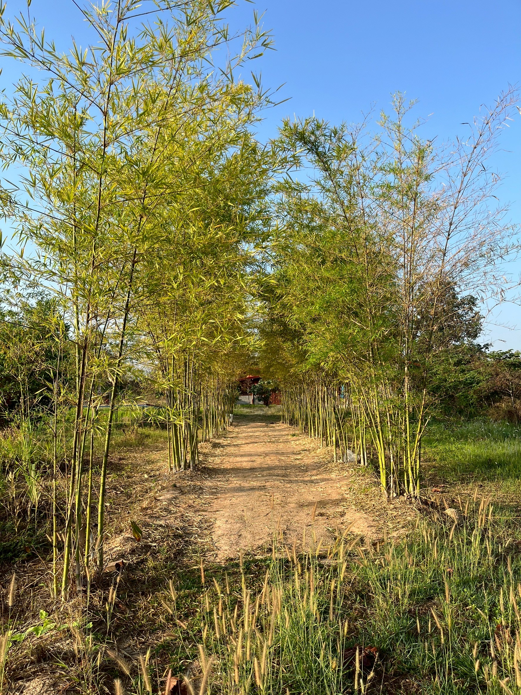
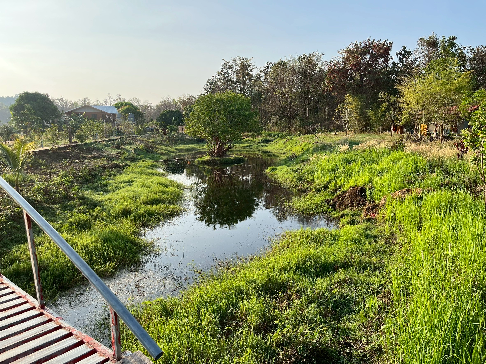
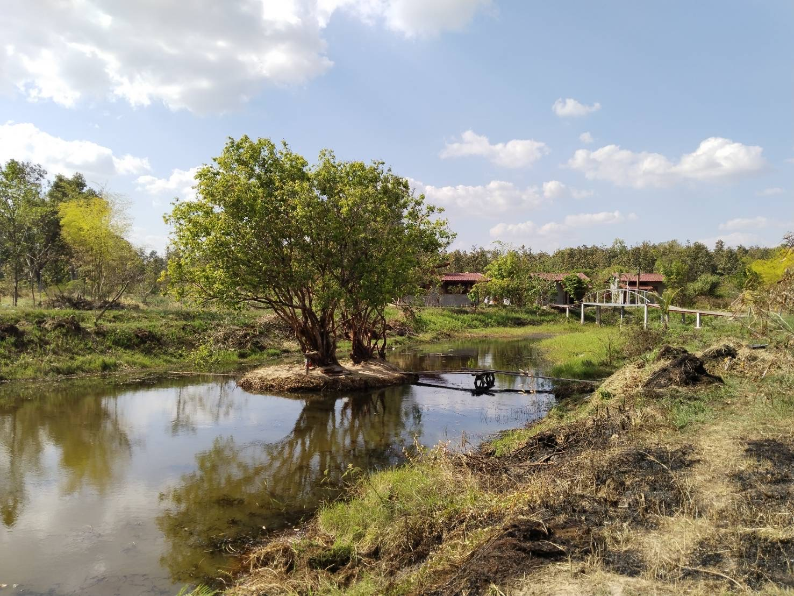

ทอดถวาย ณ สวนไผ่อภิญญาญาณ อ.เขมราฐ จ.อุบลราชธานี


เจ้าคณะอำเภอปากคาด, เจ้าอาวาสวัดสุทธิวนาราม, จังหวัดบึงกาฬ
🎬 ประจักษ์บารมีธรรม หลวงตาสมพร
พิธีบรรจุพระบรมสารีริกธาตุ ณ พระเกศสมเด็จองค์ปฐม
สืบเนื่องจาก สวนไผ่อภิญญาญาณ ได้ดำเนินการก่อสร้างศาลาปฏิบัติธรรม โดยเริ่มดำเนินการก่อสร้างเมื่อวันที่ ๓ มีนาคม พ.ศ. ๒๕๖๙ และแล้วเสร็จสมบูรณ์ในวันที่ ๑๓ เมษายน พ.ศ. ๒๕๖๙ รวมระยะเวลาก่อสร้าง ๔๒ วัน
ได้ประกอบพิธีถวายและส่งมอบศาลาปฏิบัติธรรมให้แก่คณะสงฆ์อย่างเป็นทางการ เมื่อวันที่ ๑๖ เมษายน พ.ศ. ๒๕๖๙ โดยได้รับความเมตตาจาก พระครูศรีสุตตาลังการ เจ้าคณะอำเภอเขมราฐ จังหวัดอุบลราชธานี เป็นประธานฝ่ายสงฆ์
แม้ศาลาปฏิบัติธรรมจะแล้วเสร็จสมบูรณ์ แต่ยังคงขาดองค์พระประธาน ทางสวนไผ่อภิญญาญาณจึงขอบอกบุญมายังผู้มีจิตศรัทธาทุกท่าน เพื่อร่วมกันจัดตั้งกองผ้าป่าสามัคคี
(กรณีมียอดร่วมบุญเกินกว่า ๓๗๐,๐๐๐ บาท)
ด้วยพลังศรัทธาของผู้มีจิตศรัทธาทุกท่าน หากมียอดปัจจัยร่วมบุญสูงกว่างบประมาณเบื้องต้นที่กำหนดไว้ คณะผู้จัดสร้างมีเจตนารมณ์อันแน่วแน่ที่จะนำปัจจัยส่วนเกินทั้งหมดไปบริหารจัดการ เพื่อยกระดับความวิจิตรตระการตาขององค์พระ และสร้างความยั่งยืนให้แก่สถานปฏิบัติธรรม โดยกำหนดลำดับความสำคัญ ดังต่อไปนี้:
เพื่อยกระดับพุทธศิลป์ให้มีความวิจิตรตระการตา สมพระเกียรติสูงสุด โครงการจะนำปัจจัยมาดำเนินการ ดังนี้:
เพื่อให้สถานที่แห่งนี้เป็น “แสงสว่างแห่งชายแดน” อย่างแท้จริง ปัจจัยส่วนหนึ่งจะนำไปใช้ใน:
เนื่องจากสถานปฏิบัติธรรมเพิ่งก่อตั้งได้ไม่นาน ปัจจัยส่วนที่เหลือ (หากมี) จะนำไปจัดตั้งเป็น “กองทุนบำรุงรักษาสะพานบุญ” เพื่อรองรับค่าใช้จ่ายในระยะยาว เช่น


เลขที่บัญชี: 226-8-24776-1
ชื่อบัญชี
สวนไผ่อภิญญาญาณช่องทางแจ้งความประสงค์:
Line ID
teamkus36สแกนเพิ่มเพื่อน
เรียน ทุกท่านผู้มีจิตศรัทธา
สำหรับการร่วมบุญในครั้งนี้ ท่านสามารถร่วมทำบุญได้ตามกำลังศรัทธาโดยไม่มีกำหนดเกณฑ์ขั้นต่ำครับ ทุกยอดปัจจัยของท่านคือพลังบุญที่ยิ่งใหญ่ร่วมกัน





